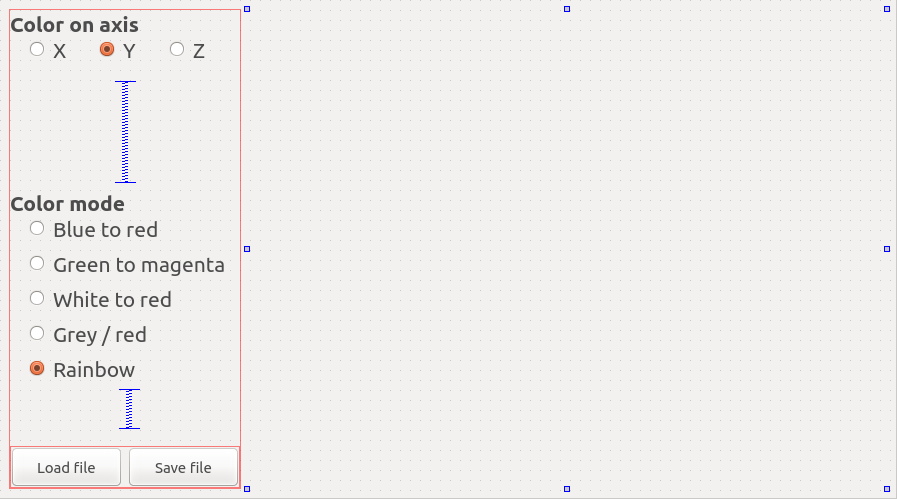
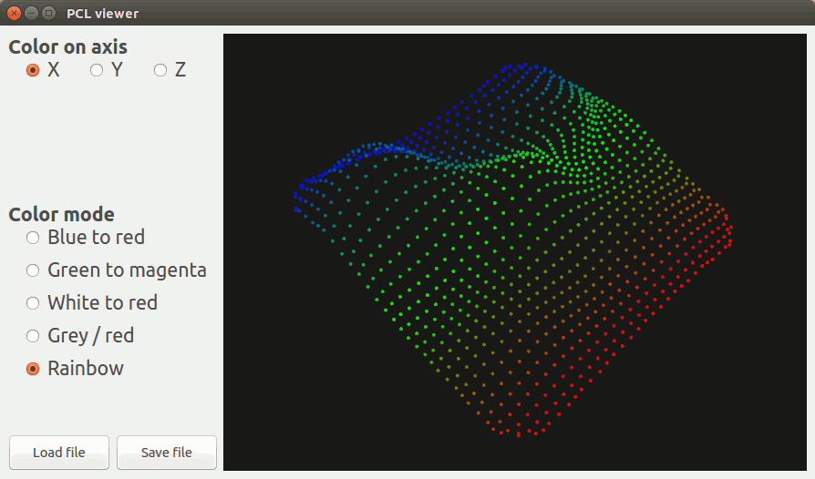

Create a PCL visualizer in Qt to colorize clouds
Please read and do the PCL + Qt tutorial first; only the coloring part is explained in details here.
In this tutorial we will learn how to color clouds by computing a Look Up Table (LUT), compared to the first tutorial this tutorial shows you how to connect multiple slots to one function. It also showcases how to load and save files within the Qt interface.
Contents
The project
As for the other tutorial, we use cmake instead of qmake. This is how I organized the project: the build folder contains all built files and the src folder holds all sources files
.
├── build
└── src
├── CMakeLists.txt
├── main.cpp
├── pclviewer.cpp
├── pclviewer.h
├── pclviewer.ui
└── pcl_visualizer.pro
If you want to change this layout you will have to do minor modifications in the code, especially line 2 of pclviewer.cpp
Create the folder tree and download the sources files from github.
Note
File paths should not contain any special character or the compilation might fail with a moc: Cannot open options file specified with @ error message.
User interface (UI)
The UI looks like this:
{kind=link}
The vertical spacers are here to make sure everything moves fine when you re-size the window; the QVTK widget size has been set to a minimum size of 640 x 480 pixel, the layout makes sure that the QVTK widget expands when you re-size the application window.
The code
Now, let’s break down the code piece by piece.
pclviewer.h
public Q_SLOTS:
/** @brief Triggered whenever the "Save file" button is clicked */
void
saveFileButtonPressed ();
/** @brief Triggered whenever the "Load file" button is clicked */
void
loadFileButtonPressed ();
/** @brief Triggered whenever a button in the "Color on axis" group is clicked */
void
axisChosen ();
/** @brief Triggered whenever a button in the "Color mode" group is clicked */
void
lookUpTableChosen ();
These are the public slots triggered by the buttons in the UI.
protected:
/** @brief Rerender the view */
void
refreshView();
/** @brief The PCL visualizer object */
pcl::visualization::PCLVisualizer::Ptr viewer_;
/** @brief The point cloud displayed */
PointCloudT::Ptr cloud_;
/** @brief 0 = x | 1 = y | 2 = z */
int filtering_axis_;
/** @brief Holds the color mode for @ref colorCloudDistances */
int color_mode_;
/** @brief Color point cloud on X,Y or Z axis using a Look-Up Table (LUT)
* Computes a LUT and color the cloud accordingly, available color palettes are :
*
* Values are on a scale from 0 to 255:
* 0. Blue (= 0) -> Red (= 255), this is the default value
* 1. Green (= 0) -> Magenta (= 255)
* 2. White (= 0) -> Red (= 255)
* 3. Grey (< 128) / Red (> 128)
* 4. Blue -> Green -> Red (~ rainbow)
*
* @warning If there's an outlier in the data the color may seem uniform because of this outlier!
* @note A boost rounding exception error will be thrown if used with a non dense point cloud
*/
void
colorCloudDistances ();
- These are the protected members of our class;
viewer_is the visualizer objectcloud_holds the point cloud displayedfiltering_axis_stores on which axis we want to filter the point cloud. We need this variable because we only have one slot for 3 axes.color_mode_stores the color mode for the colorization, we need this variable for the same reason we needfiltering_axis_colorCloudDistances ()is the member function that actually colorize the point cloud.
pclviewer.cpp
PCLViewer::PCLViewer (QWidget *parent) :
QMainWindow (parent),
filtering_axis_ (1), // = y
color_mode_ (4), // = Rainbow
ui (new Ui::PCLViewer)
We initialize the members of our class to default values (note that these values should match with the UI buttons ticked)
{
ui->setupUi (this);
this->setWindowTitle ("PCL viewer");
// Setup the cloud pointer
cloud_.reset (new PointCloudT);
// The number of points in the cloud
cloud_->resize (500);
// Fill the cloud with random points
for (std::size_t i = 0; i < cloud_->size (); ++i)
{
(*cloud_)[i].x = 1024 * rand () / (RAND_MAX + 1.0f);
(*cloud_)[i].y = 1024 * rand () / (RAND_MAX + 1.0f);
(*cloud_)[i].z = 1024 * rand () / (RAND_MAX + 1.0f);
}
Here we initialize the UI, window title and generate a random point cloud (500 points), note we don’t care about the color for now.
// Set up the QVTK window
#if VTK_MAJOR_VERSION > 8
auto renderer = vtkSmartPointer<vtkRenderer>::New();
auto renderWindow = vtkSmartPointer<vtkGenericOpenGLRenderWindow>::New();
renderWindow->AddRenderer(renderer);
viewer_.reset(new pcl::visualization::PCLVisualizer(renderer, renderWindow, "viewer", false));
ui->qvtkWidget->setRenderWindow(viewer_->getRenderWindow());
viewer_->setupInteractor(ui->qvtkWidget->interactor(), ui->qvtkWidget->renderWindow());
#else
viewer_.reset(new pcl::visualization::PCLVisualizer("viewer", false));
ui->qvtkWidget->SetRenderWindow(viewer_->getRenderWindow());
viewer_->setupInteractor(ui->qvtkWidget->GetInteractor(), ui->qvtkWidget->GetRenderWindow());
#endif
Here we set up the QVTK window.
// Connect "Load" and "Save" buttons and their functions
connect (ui->pushButton_load, SIGNAL(clicked ()), this, SLOT(loadFileButtonPressed ()));
connect (ui->pushButton_save, SIGNAL(clicked ()), this, SLOT(saveFileButtonPressed ()));
// Connect X,Y,Z radio buttons and their functions
connect (ui->radioButton_x, SIGNAL(clicked ()), this, SLOT(axisChosen ()));
connect (ui->radioButton_y, SIGNAL(clicked ()), this, SLOT(axisChosen ()));
connect (ui->radioButton_z, SIGNAL(clicked ()), this, SLOT(axisChosen ()));
connect (ui->radioButton_BlueRed, SIGNAL(clicked ()), this, SLOT(lookUpTableChosen()));
connect (ui->radioButton_GreenMagenta, SIGNAL(clicked ()), this, SLOT(lookUpTableChosen()));
connect (ui->radioButton_WhiteRed, SIGNAL(clicked ()), this, SLOT(lookUpTableChosen()));
connect (ui->radioButton_GreyRed, SIGNAL(clicked ()), this, SLOT(lookUpTableChosen()));
connect (ui->radioButton_Rainbow, SIGNAL(clicked ()), this, SLOT(lookUpTableChosen()));
At this point we connect SLOTS and their functions to ensure that each UI elements has an use.
// Color the randomly generated cloud
colorCloudDistances ();
viewer_->setBackgroundColor (0.1, 0.1, 0.1);
viewer_->addPointCloud (cloud_, "cloud");
viewer_->resetCamera ();
refreshView();
We call the coloring function, add the point cloud and refresh the QVTK viewer.
void
PCLViewer::loadFileButtonPressed ()
{
// You might want to change "/home/" if you're not on an *nix platform
QString filename = QFileDialog::getOpenFileName (this, tr ("Open point cloud"), "/home/", tr ("Point cloud data (*.pcd *.ply)"));
PCL_INFO("File chosen: %s\n", filename.toStdString ().c_str ());
PointCloudT::Ptr cloud_tmp (new PointCloudT);
if (filename.isEmpty ())
return;
int return_status;
if (filename.endsWith (".pcd", Qt::CaseInsensitive))
return_status = pcl::io::loadPCDFile (filename.toStdString (), *cloud_tmp);
else
return_status = pcl::io::loadPLYFile (filename.toStdString (), *cloud_tmp);
if (return_status != 0)
{
PCL_ERROR("Error reading point cloud %s\n", filename.toStdString ().c_str ());
return;
}
// If point cloud contains NaN values, remove them before updating the visualizer point cloud
if (cloud_tmp->is_dense)
pcl::copyPointCloud (*cloud_tmp, *cloud_);
else
{
PCL_WARN("Cloud is not dense! Non finite points will be removed\n");
std::vector<int> vec;
pcl::removeNaNFromPointCloud (*cloud_tmp, *cloud_, vec);
}
colorCloudDistances ();
viewer_->updatePointCloud (cloud_, "cloud");
viewer_->resetCamera ();
refreshView();
}
This functions deals with opening files, it supports both pcd and ply files.
The LUT computing will only work if the point cloud is dense (only finite values) so we remove NaN values from the point cloud if needed.
void
PCLViewer::saveFileButtonPressed ()
{
// You might want to change "/home/" if you're not on an *nix platform
QString filename = QFileDialog::getSaveFileName(this, tr ("Open point cloud"), "/home/", tr ("Point cloud data (*.pcd *.ply)"));
PCL_INFO("File chosen: %s\n", filename.toStdString ().c_str ());
if (filename.isEmpty ())
return;
int return_status;
if (filename.endsWith (".pcd", Qt::CaseInsensitive))
return_status = pcl::io::savePCDFileBinary (filename.toStdString (), *cloud_);
else if (filename.endsWith (".ply", Qt::CaseInsensitive))
return_status = pcl::io::savePLYFileBinary (filename.toStdString (), *cloud_);
else
{
filename.append(".ply");
return_status = pcl::io::savePLYFileBinary (filename.toStdString (), *cloud_);
}
if (return_status != 0)
{
PCL_ERROR("Error writing point cloud %s\n", filename.toStdString ().c_str ());
return;
}
}
pcd and ply files.ply will be automatically added.void
PCLViewer::axisChosen ()
{
// Only 1 of the button can be checked at the time (mutual exclusivity) in a group of radio buttons
if (ui->radioButton_x->isChecked ())
{
PCL_INFO("x filtering chosen\n");
filtering_axis_ = 0;
}
else if (ui->radioButton_y->isChecked ())
{
PCL_INFO("y filtering chosen\n");
filtering_axis_ = 1;
}
else
{
PCL_INFO("z filtering chosen\n");
filtering_axis_ = 2;
}
colorCloudDistances ();
viewer_->updatePointCloud (cloud_, "cloud");
refreshView();
}
This function is called whenever one of the three radio buttons X,Y,Z are clicked, it determines which radio button is clicked and changes
the filtering_axis_ member accordingly.
void
PCLViewer::lookUpTableChosen ()
{
// Only 1 of the button can be checked at the time (mutual exclusivity) in a group of radio buttons
if (ui->radioButton_BlueRed->isChecked ())
{
PCL_INFO("Blue -> Red LUT chosen\n");
color_mode_ = 0;
}
else if (ui->radioButton_GreenMagenta->isChecked ())
{
PCL_INFO("Green -> Magenta LUT chosen\n");
color_mode_ = 1;
}
else if (ui->radioButton_WhiteRed->isChecked ())
{
PCL_INFO("White -> Red LUT chosen\n");
color_mode_ = 2;
}
else if (ui->radioButton_GreyRed->isChecked ())
{
PCL_INFO("Grey / Red LUT chosen\n");
color_mode_ = 3;
}
else
{
PCL_INFO("Rainbow LUT chosen\n");
color_mode_ = 4;
}
colorCloudDistances ();
viewer_->updatePointCloud (cloud_, "cloud");
refreshView();
}
This function is called whenever one of the radio buttons in the color list is clicked, the color_mode_ member is modified accordingly.
We also call the coloring function and update the cloud / QVTK widget.
void
PCLViewer::colorCloudDistances ()
{
// Find the minimum and maximum values along the selected axis
double min, max;
// Set an initial value
switch (filtering_axis_)
{
case 0: // x
min = (*cloud_)[0].x;
max = (*cloud_)[0].x;
break;
case 1: // y
min = (*cloud_)[0].y;
max = (*cloud_)[0].y;
break;
default: // z
min = (*cloud_)[0].z;
max = (*cloud_)[0].z;
break;
}
This is the core function of the application. We are going to color the cloud following a color scheme. The point cloud is going to be colored following one direction, we first need to know where it starts and where it ends (the minimum & maximum point values along the chosen axis). We first set the initial minimal value to the first point value (this is safe because we removed NaN points from the point clouds). The switch case allows us to deal with the 3 different axes.
// Search for the minimum/maximum
for (PointCloudT::iterator cloud_it = cloud_->begin (); cloud_it != cloud_->end (); ++cloud_it)
{
switch (filtering_axis_)
{
case 0: // x
if (min > cloud_it->x)
min = cloud_it->x;
if (max < cloud_it->x)
max = cloud_it->x;
break;
case 1: // y
if (min > cloud_it->y)
min = cloud_it->y;
if (max < cloud_it->y)
max = cloud_it->y;
break;
default: // z
if (min > cloud_it->z)
min = cloud_it->z;
if (max < cloud_it->z)
max = cloud_it->z;
break;
}
}
We then loop through the whole cloud to find the minimum and maximum values.
// Compute LUT scaling to fit the full histogram spectrum
double lut_scale = 255.0 / (max - min); // max is 255, min is 0
if (min == max) // In case the cloud is flat on the chosen direction (x,y or z)
lut_scale = 1.0; // Avoid rounding error in boost
Here we compute the scaling, RGB values are coded from 0 to 255 (as integers), we need to scale our distances so that the
minimum distance equals 0 (in RGB scale) and the maximum distance 255 (in RGB scale).
The if condition is here in case of a perfectly flat point cloud and avoids exceptions thrown by boost.
int value;
switch (filtering_axis_)
{
case 0: // x
value = std::lround ( (cloud_it->x - min) * lut_scale); // Round the number to the closest integer
break;
case 1: // y
value = std::lround ( (cloud_it->y - min) * lut_scale);
break;
default: // z
value = std::lround ( (cloud_it->z - min) * lut_scale);
break;
}
We have computed how much we need to scale the distances to fit the RGB scale, we first need to round the double values to the closest integer
because colors are coded as integers.
// Apply color to the cloud
switch (color_mode_)
{
case 0:
// Blue (= min) -> Red (= max)
cloud_it->r = value;
cloud_it->g = 0;
cloud_it->b = 255 - value;
break;
This is where we apply the color level we have computed to the point cloud R,G,B values.
You can do whatever you want here, the simplest option is to apply the 3 channels (R,G,B) to the value computed, this means that the
minimum distance will translate into dark (black = 0,0,0) points and maximal distances into white (255,255,255) points.
case 1:
// Green (= min) -> Magenta (= max)
cloud_it->r = value;
cloud_it->g = 255 - value;
cloud_it->b = value;
break;
case 2:
// White (= min) -> Red (= max)
cloud_it->r = 255;
cloud_it->g = 255 - value;
cloud_it->b = 255 - value;
break;
case 3:
// Grey (< 128) / Red (> 128)
if (value > 128)
{
cloud_it->r = 255;
cloud_it->g = 0;
cloud_it->b = 0;
}
else
{
cloud_it->r = 128;
cloud_it->g = 128;
cloud_it->b = 128;
}
break;
default:
// Blue -> Green -> Red (~ rainbow)
cloud_it->r = value > 128 ? (value - 128) * 2 : 0; // r[128] = 0, r[255] = 255
cloud_it->g = value < 128 ? 2 * value : 255 - ( (value - 128) * 2); // g[0] = 0, g[128] = 255, g[255] = 0
cloud_it->b = value < 128 ? 255 - (2 * value) : 0; // b[0] = 255, b[128] = 0
}
}
}
These are examples of coloring schemes, if you are wondering how it works, simply plot the computed values into a spreadsheet software.
Compiling and running
- There are two options here :
You have configured the Qt project (see Qt visualizer tutorial) and you can compile/run just by clicking on the bottom left “Play” button.
You didn’t configure the Qt project; just go to the build folder an run
cmake ../src && make -j2 && ./pcl_visualizer
Note that if you don’t specify a extension when saving the file, the file will be saved as a binary PLY file.
{kind=link}